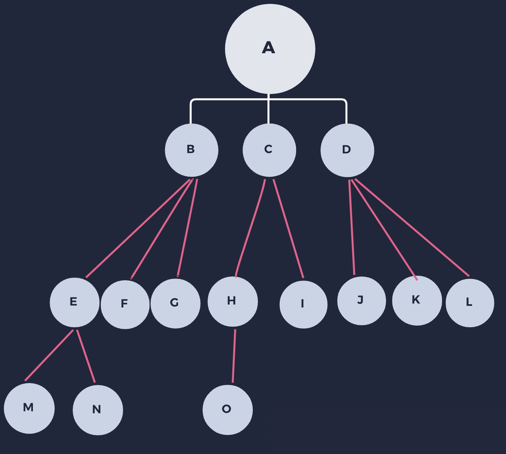
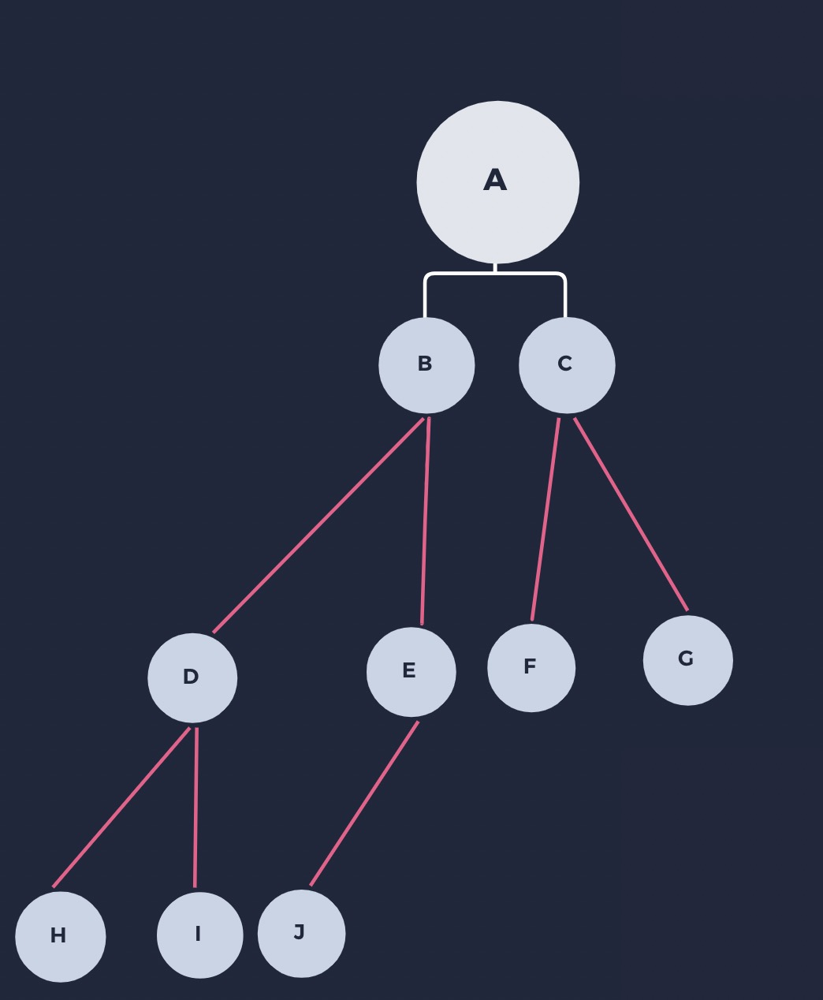
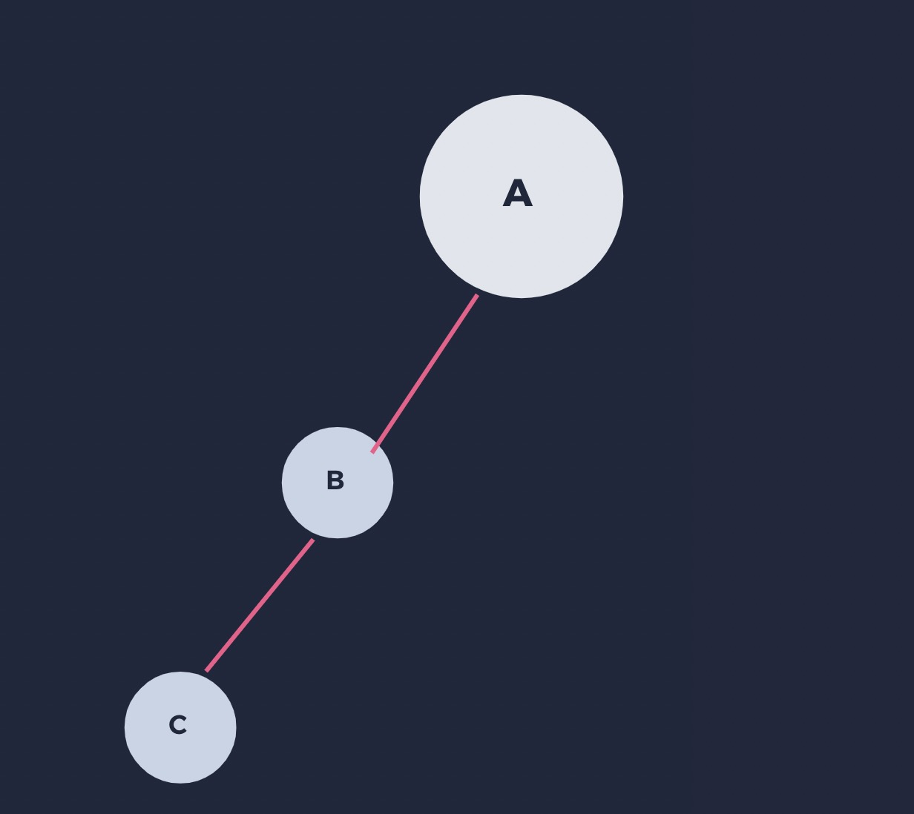
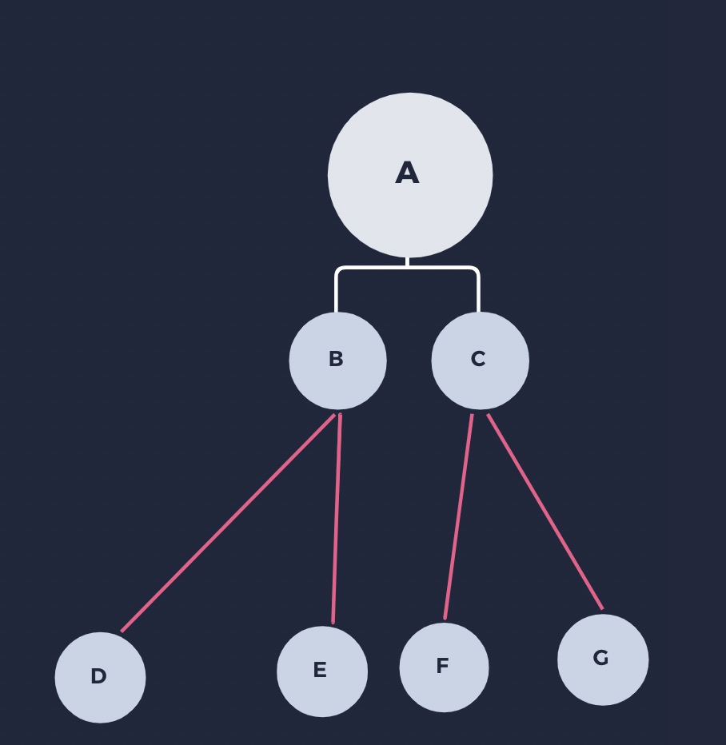
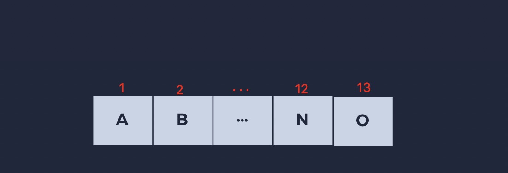
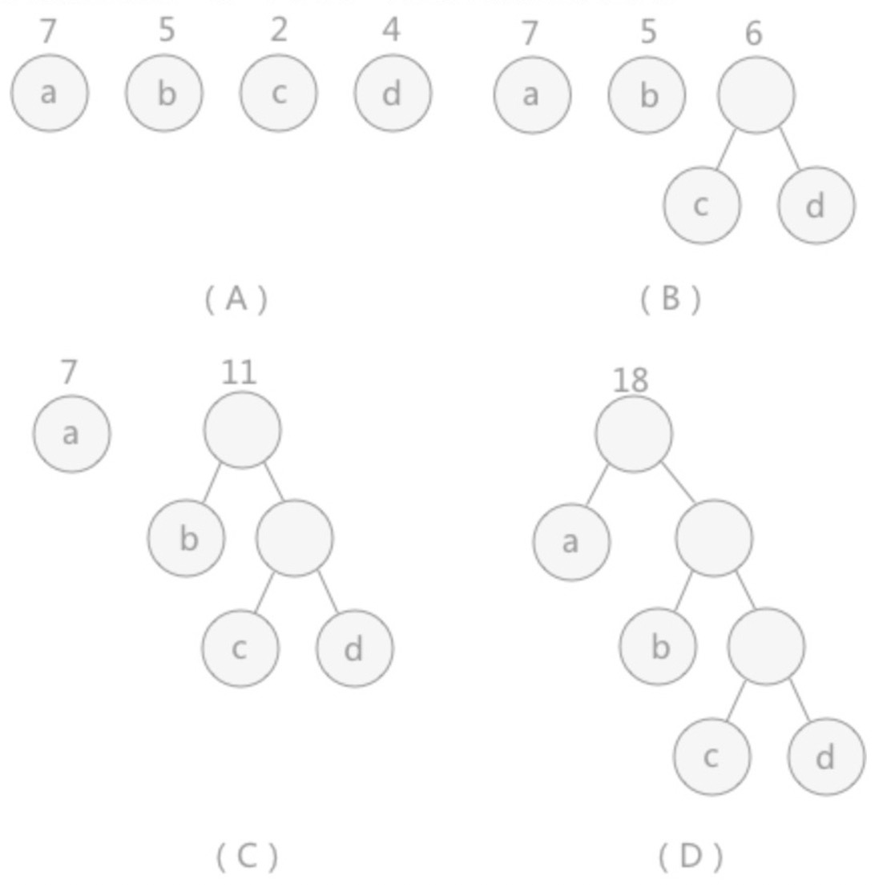

树
/ / 点击 /树结构是一种非线性存储结构，存储的是具有“一对多”关系的数据元素的集合。

- 特点：
1.在非空树中，根结点是唯一的，不可能存在多个根结点，数据结构中的树只能有一个根结点；
2.子树的个数没有限制，但它们互不相交；
- 度：
结点的度：结点拥有的子树个数叫做结点的度，结点A的度是3，C的度是2，H的度是1。
树的度：树中最大的结点度。图中树的度是3
- 结点的关系
1.结点子树的根结点称为该结点的 孩子结点，该结点叫做孩子结点的双亲结点。图中E是B的孩子结点，B是E的双亲结点；
2.同一双亲的结点叫做兄弟结点，图中的F、G是E的兄弟结点；
3.同一层的结点叫做堂兄结点，通中的H、I、J、K、L是E的堂兄结点；
4.从根到该结点经过的左右分支结点叫做该结点的祖先结点，图中M的祖先结点有A、B、E。
5.该结点的子树任意一个结点都称为该结点的子孙结点，E的子孙结点有M和N。
- 结点的层次
从根开始定义，根为第一层，根的孩子为第二层，根的孩子的孩子为第三层…。
树的深度：树中结点的最大层次数称为树的深度或高度，图中深度为4
二叉树
二叉树(Binary Tree)是n(n>=0)个结点的有限集合，该集合或者为空集(空二叉树)，或者由一个跟结点和两个互补相交的、分别称为根的结点在左子树和右子树组成。每个结点最多有两颗子树，所以二叉树中不存在度大于2的结点。

- 二叉树的特点
1.每个结点最多有两颗子树，所以二叉树中不存在度大于2的结点；
2.左子树和右子树是有顺序的，次序不能任意颠倒；
3.即使树中某结点只有一棵子树，也要区分它是左子树还是右子树；
- 二叉树的性质
1.在二叉树中第i层上最多有2的i-1次方个结点(i>=1)；
2.二叉树中如果深度为k,那么最多有2k-1个节点(k>=1）；
- 斜树
所有的结点都只有左子树的二叉树叫左斜树。所有结点都是只有右子树的二叉树叫右斜树。这两者统称为斜树。

- 满二叉树
在一棵二叉树中。如果所有分支结点都存在左子树和右子树，并且所有叶子都在同一层上，这样的二叉树称为满二叉树。
满二叉树的特点有：
1.叶子只能出现在最下一层。出现在其它层就不可能达成平衡。
2.非叶子结点的度一定是2。
3.在同样深度的二叉树中，满二叉树的结点个数最多，叶子数最多。

- 完全二叉树
若设二叉树的高度为h，除第 h 层外，其它各层 (1～h-1) 的结点数都达到最大个数，第h层有叶子结点，并且叶子结点都是从左到右依次排布，这就是完全二叉树。
完全二叉树的特点：
1.叶子结点只出现在最下层和次下层；
2.最下层叶子结点集中在树的左部；
3.如果结点度为1，则该结点只有左孩子，即没有右子树；
4.相同结点数的二叉树，完全二叉树的深度最小；
5.满二叉树一定是完全二叉树，但反过来不一定成立。

- 二叉树存储结构
1.*** 顺序存储结构
二叉树的顺序存储结构就是使用一维数组存储二叉树中的结点，并且结点的存储位置，就是数组的下标索引。

如果索引下为空表示该位置下没有存储结点。
2.*** 链式存储结构
结构定义
1 | class BinaryNode<E> { |
- 二叉树的遍历
1.前序遍历(DLR)
首先访问根，再先序遍历左（右）子树，最后先序遍历右（左）子树
图中结果：ABDECFG
1 | /** |
2.中序遍历(LDR)
首先中序遍历左（右）子树，再访问根，最后中序遍历右（左）子树。
图中结果：DBEAFCG
1 | /** |
3.后序遍历(LRD)
首先后序遍历左（右）子树，再后序遍历右（左）子树，最后访问根
图中结果：DEBFGA
1 | /** |
4.层序遍历
按照层次访问，通常用队列来做。访问根，访问子女，再访问子女的子女
- 线索二叉树
二叉树线索化的过程中，会把树中的空指针利用起来作为寻找当前节点前驱和后继的线索，这样就出现了一个问题，即线索和数中原有指向孩子节点的指针无法区分。上边的这种节点设计就是为了区分这两类指针。其中，ltag和rtag为标识域，它们的具体意义如下:
1.如果ltag==0，表示lchild为指针，指向结点的左子树；
2.如果ltag==1，表示lchild为线索，指向结点的直接前驱;
3.如果rtag==0，表示rchild为指针，指向结点的右子树；
4.如果rtag==1，表示rchild为线索，指向结点的直接后继。
- 哈夫曼树
当用 n 个结点（都做叶子结点且都有各自的权值）试图构建一棵树时，如果构建的这棵树的带权路径长度最小，称这棵树为“最优二叉树”，有时也叫“赫夫曼树”或者“哈夫曼树”。
